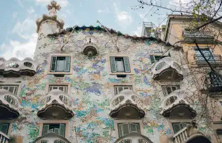
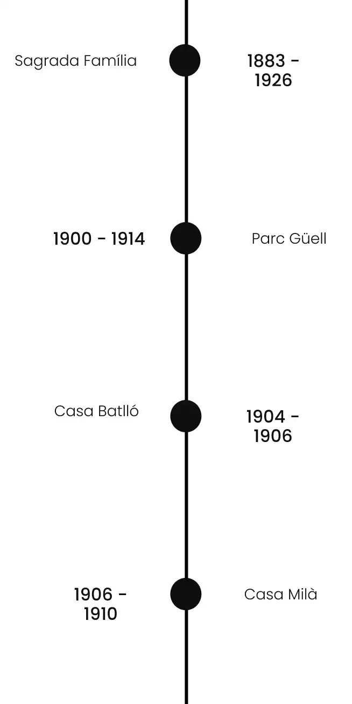

Le Gaudíisme, centré sur l'œuvre du catalan Antoni Gaudí, mêle le modernisme catalan à l'art nouveau. Ce mouvement architectural du tournant. du 20e siècle se distingue par son innovation et son originalité.
Antoni Gaudí, considéré comme le père du Gaudíisme, a révolutionné l'architecture avec ses conceptions audacieuses et novatrices. Influencé par ses racines catalanes, son profond catholicisme et son amour pour la nature, Gaudí a développé un style distinctif, marqué par des formes organiques, une utilisation extravagante de la couleur et une intégration harmonieuse de l'artisanat dans la construction.
Le Gaudíisme a eu une influence notable sur les mouvements d'architecture moderniste qui ont suivi. Il a introduit des concepts de design avant-gardiste qui ont défié les conventions architecturales de son époque, ouvrant la voie à une exploration plus libre et expressive de l'espace et de la forme.
Parcourez le génie de Gaudí à travers le temps en découvrant ses œuvres emblématiques sur notre frise chronologique.
